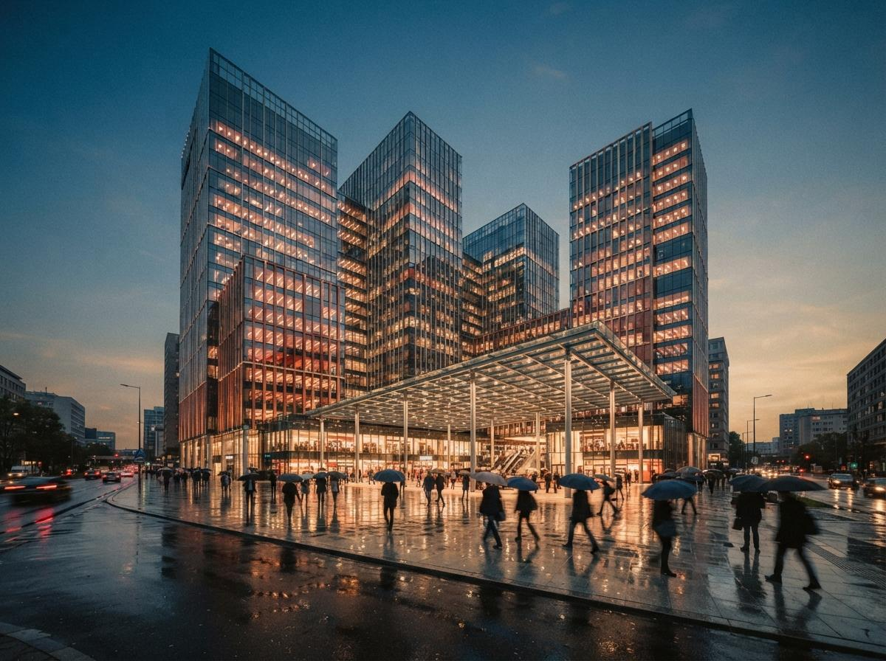

This post turned up twice in one intel sweep, once under new tools and once under competitor content, which is exactly the reach a comparison on chaos.com gets. Architects will find it, and its top result energy means many will treat it as neutral research. It is not neutral. It is also not dishonest, and that combination is worth taking apart, because vendor comparisons are now the dominant form of "best AI tools" content and most of them work exactly like this one. We did the same exercise on Gendo's top ten last week, where the vendor crowned itself outright. Chaos is subtler, and subtle is more effective.
The lineup is the verdict
The six tools compared: Veras, Midjourney, Rendair AI, Archsynth, xFigura, and Artlist. Read that list again and notice what it is built to do.
Midjourney is a general image model with no BIM integration and a known geometry problem, which the post correctly notes. Rendair is a web upload tool priced for students. Archsynth and xFigura are niche entrants we tested this spring, one a pay-per-render web tool at roughly five cents an image, the other a Rhino-only collaborative canvas. Artlist is a stock footage and music platform that added an AI image feature; it is not an architecture tool by any definition, and its presence in an "architectural rendering tools" comparison is the clearest tell in the piece.
Now the absences. D5 Render, which ships AI features inside a renderer half the archviz world already uses. SketchUp Diffusion, native AI rendering inside SketchUp. Archicad's AI Visualizer, which is free and lives inside the same host application Veras charges for. The dedicated archviz AI cohort: mnml.ai, MyArchitectAI, ArchiVinci, VizBase, LookX, Gendo. Every one of these competes with Veras directly, on Veras's own turf of model-faithful architectural rendering. None made the lineup. The five entrants that did make it share one property: not a single one has a BIM plugin.
Which matters, because of what got measured.
The first criterion is a roadmap
The post scores five criteria: BIM/CAD integration, AI quality and control, speed, pricing and value, learning curve. BIM integration comes first, and the post's headline claim is that Veras is the only AI rendering tool with direct integration into seven major platforms: Revit, SketchUp, Rhino, Vectorworks, Archicad, Forma, and Allplan.
The seven-platform count is accurate, and it genuinely is the widest plugin coverage in the category; we said as much in our Veras 4.5 coverage. But "only" is doing dishonest work in an honest sentence. Veras is the only tool in this lineup with BIM integration because the lineup was assembled from tools without it. Put D5, SketchUp Diffusion, or the Archicad Visualizer in the field and the first criterion stops being a coronation and starts being a contest.
The general rule, and it holds across every vendor comparison we have audited: the first criterion is not the most important thing about the category, it is the most important thing about the vendor's product. Chaos leads with integration because integration is Veras's moat. A Midjourney comparison would lead with image quality. A Rendair comparison would lead with price. The criteria order is an org chart, not a methodology.
What the post gets right
Credit where due, because the audit found less rot than we expected. The per-tool facts held up against our own files.
| Tool | Chaos's claim | Our file |
|---|---|---|
| Veras | $29/mo annual, 7 integrations, Geometry Override, Render Seed | Checks out. Matches our 4.5 testing, including the quota on Nano Banana renders, which the post admits. |
| Midjourney | $10/mo, striking images, no BIM, hallucinates geometry | Fair. Same verdict as our review. |
| Rendair | Cheap student tier, web only, screenshot uploads | Accurate, consistent with our testing. |
| Archsynth | ~$0.049 per render, economical, limited control | Matches what we found. |
| xFigura | Rhino-only canvas, multiple models | Accurate. Single-host critique is fair. |
| Artlist | General creative platform, not architecture-specific | True, but then why is it here at all? |
Even the conclusion is reasonable on its face: match the tool to the workflow, Veras for BIM users, Midjourney for concept imagery, budget tools for students. The post also concedes real Veras weaknesses, the render quota and the prompt learning curve. This is what makes it effective. A reader fact-checking any single sentence finds it true, and walks away trusting a ranking that was decided before a single criterion was scored.
Every fact can be true and the comparison still rigged. The lineup votes before the criteria do.

Five brands, one scoreboard
The wider context is consolidation, which we mapped in the Chaos 2026 product line piece. Chaos now owns the dominant offline renderers (V-Ray, Corona), a leading real-time renderer (Enscape), a real-time raytracer (Vantage), and the leading BIM-integrated AI tool (Veras), with a shared credit system stitching them together. When one company owns that much of the stack, its blog is not a publication, it is a storefront, and category comparisons published there are shelf placement.
This is not a scandal. It is how mature categories behave, and Adobe, Autodesk, and Epic all do the same. But it changes what "best AI rendering tools 2026" means as a search result, because the companies with the most search authority are the ones with products to place. Neutral comparison content is being crowded out by exactly this genre: accurate, well-produced, and structurally incapable of naming the strongest competitor.
How to read a vendor comparison
Three checks, thirty seconds, works on any of these posts.
- Audit the lineup before the scores. Ask who is missing, not whether the entries are described fairly. If the publisher's product is the only serious tool in the field, the comparison was over before it started.
- Read the criteria order as a product roadmap. The first criterion is the publisher's moat. Reorder the criteria around your own priorities and see if the winner survives.
- Treat concessions as calibration, not honesty. Admitting small weaknesses (a quota, a learning curve) is what makes the big frame credible. The concession is part of the copy.
For the genre as a whole, our listicle audit covers the affiliate-driven version of the same disease.
Our take
Is Veras actually the right pick for a BIM-first firm? Often, yes. Our own Revit workflow testing supports the integration argument, and nothing in the Chaos post is false enough to call out on its own. That is precisely why this one matters more than a sloppy affiliate listicle. The dishonest ones discredit themselves. The accurate ones train architects to trust the genre, and the genre is a sales channel.
Chaos graded its own homework and showed its work, and the work is clean. The trick was enrolling the class.
Audited from the June 18, 2026 Chaos blog post "AI Architectural Rendering Tools in 2026: 6 Options Compared" by Allanah Faherty, surfaced twice in today's intel sweep, checked against prior ArchiGen testing of Veras 4.5, Midjourney, Rendair, Archsynth, and xFigura. No affiliate relationship with any tool named.